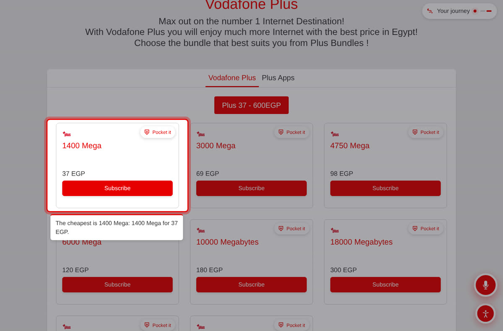
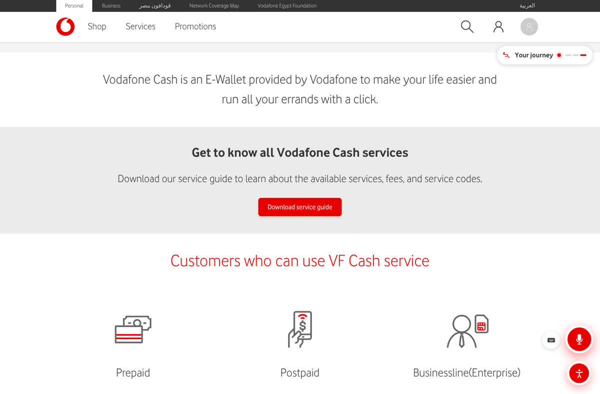
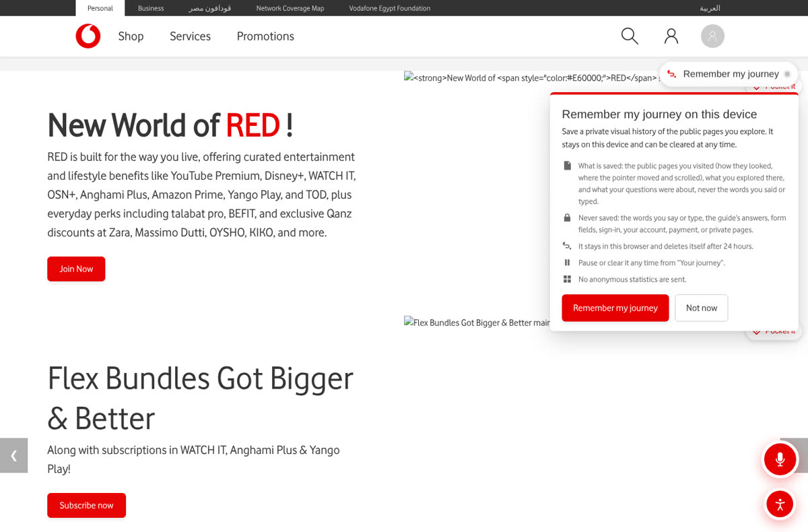
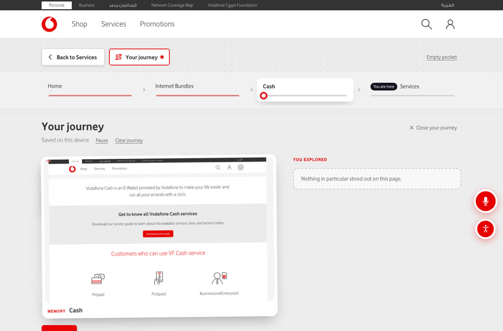

The five demos
1 Voice guide
Recorded walkthroughAsk by voice or text, in English or Egyptian Arabic. The guide takes you to the answer on the page: it navigates, opens tabs, spotlights the right card and reads live values.


Hear the guide's voice live: VoiceTut on the Services page, the Egyptian Arabic and English voice running on Modal. It may take a minute or two to wake up the first time.
2 Pocket
LivePeel any service off like a sticker and keep it in a pocket that peeks from the corner, with its mascot and drone. Turn the page to see everything you kept as a sticker album.
- Press Pocket it on any card.
- Open the corner curl at the bottom right.
3 Reimagine this page
LiveDescribe how you want the page presented and it is recomposed: magazine, spotlight, flipbook, tunnel and more, from the same content.
- Press Reimagine this page (top right).
- Pick a ready-made experience or type a request.
4 Exploration Trail ("Your journey")
Recorded walkthroughWith the visitor's consent, the guide records their journey on the device only. A timeline in the Pocket lets them scrub back through it, see what they explored most, and ask a follow-up.


5 Your RED world
Live (English)At the end of the Pocket a dock of categories rises. Pull one up and the page slides aside to reveal a personal benefits layer with a live status widget and topics ranked per customer.
- Open the Pocket album and go to its last page.
- Press or pull up an icon in the dock.
+ Tips
LiveA Tips-style walkthrough of the demos, from the Tips button at the bottom left of the page.
Full walkthrough (recorded from this build)
Journey consent, two spoken questions, the Services page where the demos meet, the Pocket and its journey, a question chip, then Reimagine (magazine, then tunnel). Recorded headless, so it has no sound; the guide's replies appear as text.
The same walkthrough in Egyptian Arabic
This is a static preview. Pocket, Reimagine, Your RED world and Tips run live in your browser. The voice guide and the journey need the guide's voice server, which this static host can't run, so they're shown as recordings of the same build. Reimagine uses its ready-made experiences here, because no AI key is published with this page.